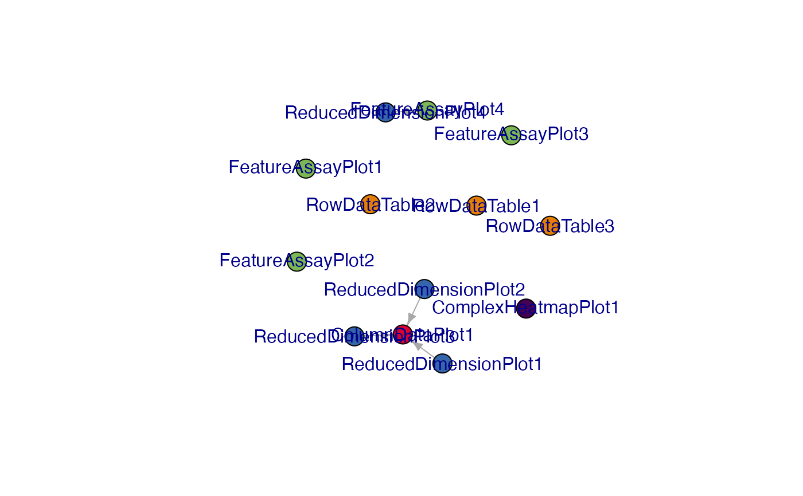

Translates the layout of the initial configuration object as a networks,
representing panels as nodes and links between them as edges.
Usage
view_initial_network(initial, plot_format = c("igraph", "visNetwork", "none"))Arguments
- initial
An
initiallist object, in the format that is required to be passed as a parameter in the call toiSEE::iSEE().- plot_format
Character string, one of
igraph,visNetwork, ornone. Defaults toigraph. Determines the format of the visual representation generated as a side effect of this function - it can be the output of theplot()function forigraphobjects, or an interactive widget created viavisNetwork::visNetwork().
Details
Panels are the nodes, with color and names to identify them easily. The connections among panels are represented through directed edges. This can be a compact visualization to obtain an overview for the configuration, without the need of fully launching the app and loading the content of all panels
This function is particularly useful with mid-to-large initial objects, as
they can be quickly generated in a programmatic manner via the iSEEinit()
provided in this package.
Examples
## Load a dataset and preprocess this quickly
sce <- scRNAseq::RichardTCellData()
#> snapshotDate(): 2025-04-08
#> loading from cache
sce <- scuttle::logNormCounts(sce)
sce <- scater::runPCA(sce)
sce <- scater::runTSNE(sce)
## Select some features and aspects to focus on
gene_list <- c("ENSMUSG00000026581", "ENSMUSG00000005087", "ENSMUSG00000015437")
cluster <- "stimulus"
group <- "single cell quality"
initial <- iSEEinit(sce = sce,
features = gene_list,
clusters = cluster,
groups = group)
g_init <- view_initial_network(initial)

g_init
#> IGRAPH 0459bbb DN-- 13 4 --
#> + attr: name (v/c), color (v/c)
#> + edges from 0459bbb (vertex names):
#> [1] ReducedDimensionPlot1->ColumnDataPlot1
#> [2] ReducedDimensionPlot2->ColumnDataPlot1
#> [3] ReducedDimensionPlot3->ColumnDataPlot1
#> [4] ReducedDimensionPlot4->FeatureAssayPlot4
view_initial_network(initial, plot_format = "visNetwork")
#> IGRAPH 6f1b8f7 DN-- 13 4 --
#> + attr: name (v/c), color (v/c)
#> + edges from 6f1b8f7 (vertex names):
#> [1] ReducedDimensionPlot1->ColumnDataPlot1
#> [2] ReducedDimensionPlot2->ColumnDataPlot1
#> [3] ReducedDimensionPlot3->ColumnDataPlot1
#> [4] ReducedDimensionPlot4->FeatureAssayPlot4
## Continue your exploration directly within iSEE!
if (interactive())
iSEE(sce, initial = initial)
#> Error in iSEE(sce, initial = initial): could not find function "iSEE"